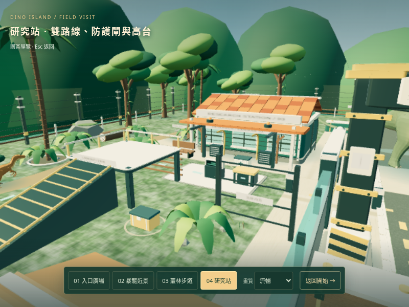
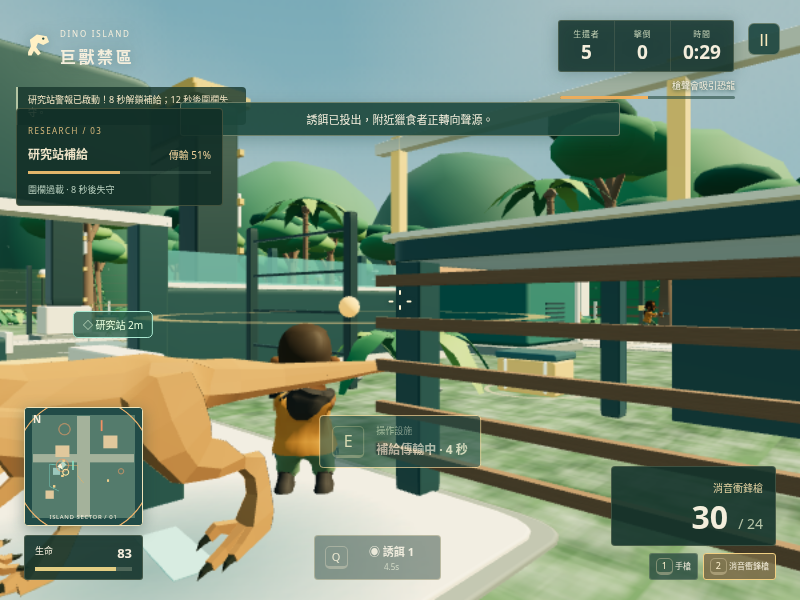
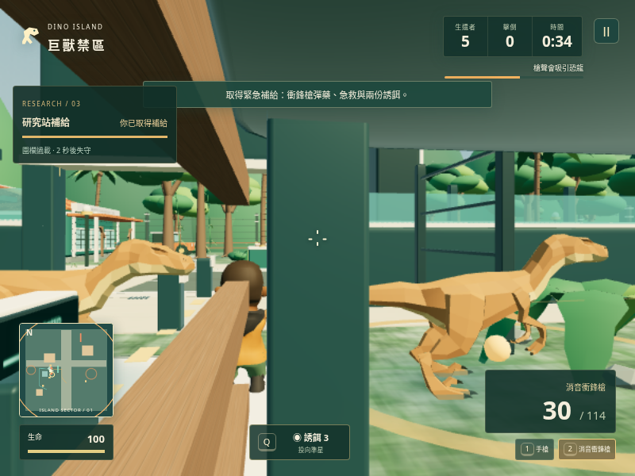
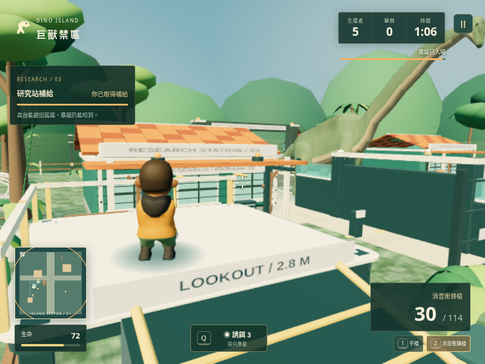
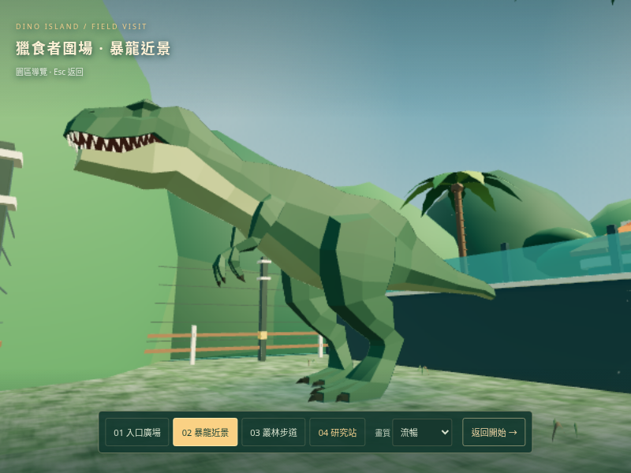

研究站爭奪戰 · 遊戲實景
電閘捷徑、西側步道與可步行登上的高台。啟動補給會讓警報、對手與恐龍一起改變戰局。
進入研究站 →




以上為目前版本的實際瀏覽器畫面。驗證過程使用一般移動、E、Q、Esc 和選單；雲端軟體繪圖結果不代表實體電腦效能。15 秒宣傳片採上一輪入口版本的宣傳運鏡。
電閘捷徑、西側步道與可步行登上的高台。啟動補給會讓警報、對手與恐龍一起改變戰局。
進入研究站 →




以上為目前版本的實際瀏覽器畫面。驗證過程使用一般移動、E、Q、Esc 和選單；雲端軟體繪圖結果不代表實體電腦效能。15 秒宣傳片採上一輪入口版本的宣傳運鏡。